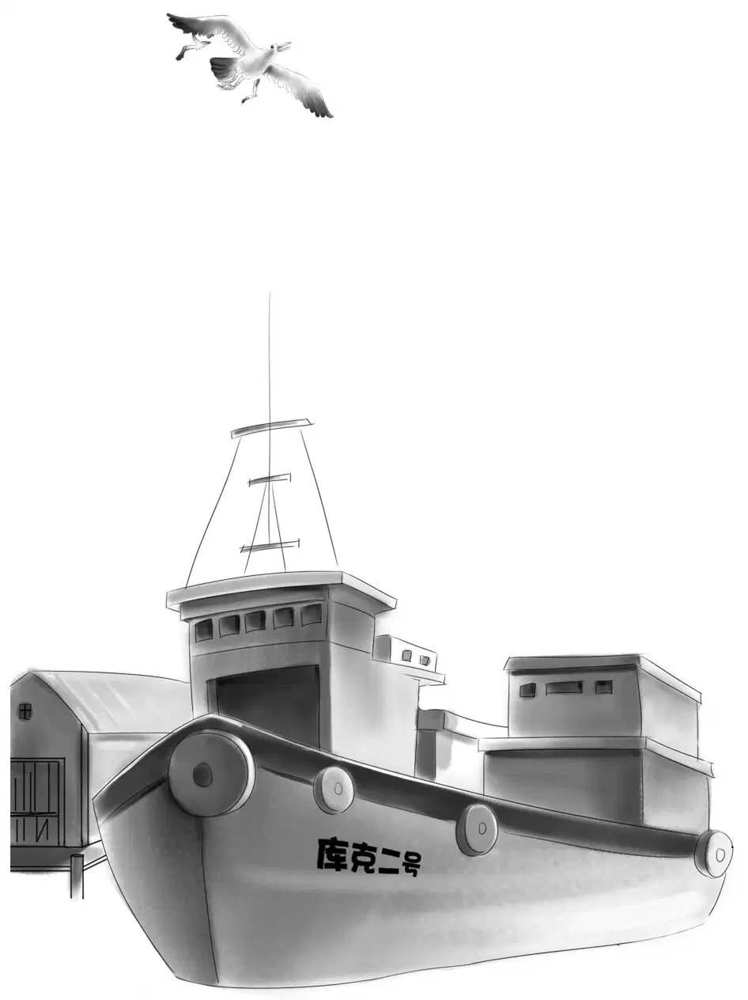
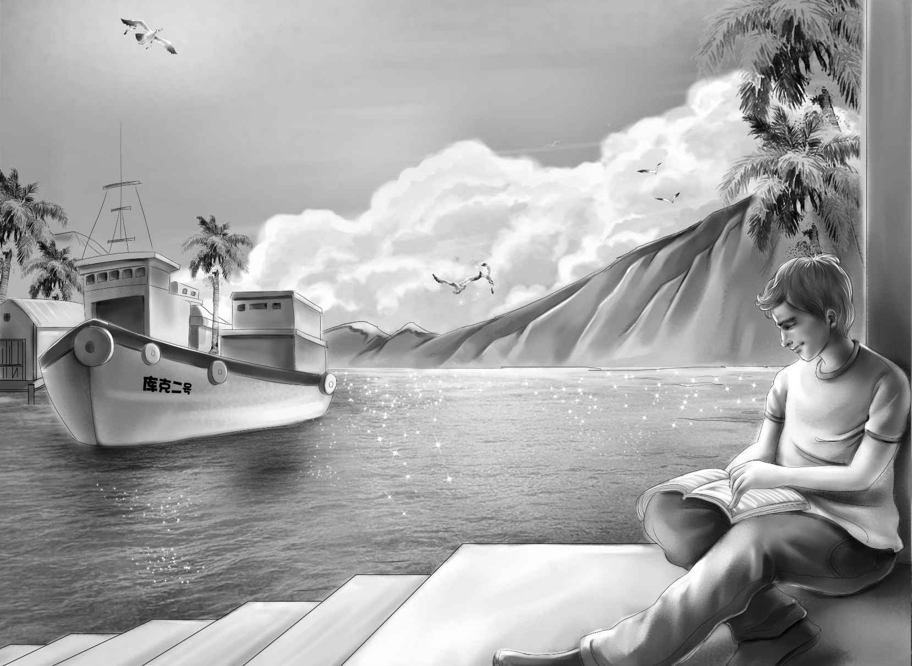

Hints and Plans

第二天早晨，维莉突然起了满脸的小红疙瘩。杰西看到维莉，不禁吓了一跳，赶紧问道：“你怎么了？”
“被蚊子咬的。”维莉委屈地回答。
“疼么？”杰西关切地问，“我都快认不出你来了。咱们得想想办法。”
“我都快张不开嘴了。”可怜的维莉一脸郁闷。
“昨晚我也听到蚊子嗡嗡地在我耳边打转儿。”杰西说着抬起自己被咬的胳膊。
正在这时，两个男孩下楼来吃早餐了。
“早上好啊！”班尼精神奕奕地打着招呼。看到维莉的脸后，他不禁惊叫起来：“维莉，你怎么了？你的脸好像肿了！”
“昨晚被蚊子咬的。”维莉正为脸肿了不能出门而苦恼。
“我也被咬了几个包呢！”奥登先生说，“每年的这个时候，风向变了，风改从岸上吹向大海时，蚊子就出现了。”
亨利慢条斯理地说：“何况咱们灯塔里有五扇窗户呢！”
“纱门倒是有，可窗户上没有窗纱。”说着，班尼突然灵光一现，“我有个好主意！干脆就以装窗纱为借口，让拉里来帮忙，怎么样？”
“可是，可怜的维莉怎么办？”奥登先生心疼地问。
“豪尔先生那儿应该有治蚊子叮咬的药，”杰西说，“但愿也有纱布。”
维莉被脸上的红疙瘩折腾得几乎都没法吃饭了。
亨利两三口吞下早餐后，就向杂货店飞奔而去。
很快，他就带着一大堆东西回来了，有给维莉抹脸的药、一大卷纱布、一大盒大头针，还有两把小锤子。
杰西赶紧将买来的白药膏抹在维莉的脸上。
“维莉，你就别干活了，”班尼叮嘱道，“你都看不见大头针了。”
“咱们马上要去找拉里了！”杰西说，“班尼，从现在起，千万不要提看到拉里开船出海的事儿，也不要问他在夏季小厨房做过些什么。他想说的时候自然会告诉我们的。”
班尼嘟起了小嘴：“知道啦，杰西，我没那么笨啦！”
奥登家的孩子在拉里家外面的街道上转悠着，观察着拉里家的动静。没过一会儿，就看到库克夫人来到了院子里。
“请问拉里在家吗？”亨利赶紧问道。
“他还没回来，我也不知道他去哪儿了。”
他们瞟了一眼，只见“库克二号”正好好地停在岸边。
大伙儿又向码头奔去，终于看到了拉里，他正坐在那儿埋头看书。
“你好啊，拉里，”班尼大声打着招呼，“你能帮我们一个忙吗？”
“帮你们干什么？”拉里合起书，他立刻就注意到少了一个女孩，便问道，“你的另一个姐姐到哪儿去了？”
“咳，别提啦！见到了你肯定也认不出来。”班尼说，“她被蚊子咬了一脸的包，有只眼睛连睁都睁不开了。”
杰西赶紧加了一句：“所以我们才想给五扇窗户都装上窗纱。”
“那也不需要我帮忙啊！”拉里说。
“你自己数数嘛，”班尼说，“我们有五扇窗户，可只有四个人呐！”
拉里被班尼的话逗乐了。他站起身，把书夹在胳膊下，跟班尼他们一起来到了灯塔。
拉里抬起头，看了看高高的窗户，又看了看窗纱：“在外面可不好装。”
班尼说：“屋外是不太方便，以前我们一般都是在屋子里装的，待会儿示范给你看好了。”
“好，让我先看看你们是怎么做的。”拉里说。
正在这时，维莉走了出来。
“哦，小可怜，你的确被蚊子叮得很惨！”拉里说着，开始裁窗纱了。
爷爷坐在岩石凳上，笑眯眯地看着孩子们将窗纱剪好，钉在窗子上，他甚至能听到孩子们的谈话声和拉里的笑声。享受了片刻的宁静后，他轻轻起身，向杂货店走去。
爷爷征询着豪尔先生的意见：“你觉得拉里·库克会喜欢牛排么？”
“牛排？”豪尔先生想了想，“我记得他好像不怎么喜欢吃。”
“要不试一试？”爷爷说，“给我来五磅牛排吧！”
“再来点炸土豆片？”豪尔先生问道。
“对，还有腌菜！”爷爷说。
“馅饼要吗？”

“那就拿两个馅饼和几个面包卷吧！”爷爷说，“都要樱桃馅儿的。”
豪尔先生把食物装进大纸袋里。爷爷拿着纸袋悄悄地回到岩石凳，听到孩子们还在敲打着钉子，于是他找来两块废铁，用力敲击了几下，然后抬起头，果然看到班尼第一个冲到了窗户边。
“爷爷，您是在打晚餐铃么？”班尼大声问道。
“你们下来看看就知道了！”爷爷露出了慈祥的笑容。
五个孩子欢快地跑到岩石边，爷爷将食物一一展示给他们看。
“我们可以做烤牛排啦！”拉里欢呼起来。
“当然可以，”亨利说，“炉灶和烤架都在这里呢！”
于是大家开始分头去捡干柴火，由拉里负责生火。
奥登一家注意到，拉里连一眼都没向夏季小厨房看去。他压根不会知道，其实奥登一家已经知道他的小秘密了。
“我差点忘了，你是个料理高手呢！”班尼说。
“你喜欢吃什么样的牛排？”拉里问，“全熟的？”
“不，他喜欢烤焦的！”亨利打趣道。
“我烤的牛排是绝对不会焦的。”拉里自信地说。
“好孩子，我要嫩牛排。”奥登先生微笑着请求道。
“没问题，口感既要嫩也不要太生，是吗？”拉里又强调了一遍。
“没错！”奥登先生说，“我敢保证，我们将吃到一顿很特别的大餐！”
拉里并没有马上将牛排放上去，而是等着火苗变小，其他人则都有点迫不及待了。火终于到了适合的大小，拉里才开始确认道：“两份嫩牛排，三份半熟的，班尼要全熟的。”
“这么说，我要等到最后才能吃到喽？”班尼说。
杰西在面包卷上抹上黄油，奥登先生的牛排最先烤好，拉里将自己的那块取下来，又把剩下的牛排挪到旺火处，就这样，大家很快都吃上了牛排三明治。
“可怜的爷爷，”班尼说，“没有咖啡喝。”
“我今天不需要咖啡，”爷爷说，“给我一块腌菜就行了！”
吃完午餐，大家准备收拾餐桌，拉里估摸着是时候该回家了，于是起身告辞道：“今天我过得很开心。”他笑着看了看维莉，“希望你不会再被蚊子咬了。”
“谢谢你能来帮我们，”维莉说，“真希望能快点再见到你！”
“也许会的。”拉里说。
拉里离开后，杰西激动地说：“我想咱们现在和拉里真成朋友了，对吧，爷爷？”
“没错，”奥登先生赞同道，“你们的办法找对了，先是挑了件让拉里感兴趣的事，然后和他一起完成——这是建立友情的捷径啊！”
“啊，真希望我们能变成无话不谈的朋友，这样拉里就会说出自己的宏伟事业，说不定他指望着卖项目发大财呢！”班尼说。
“我觉得他对做科学实验更感兴趣，而不是赚钱。”亨利说，“当然，这只是我的猜测罢了。”
一家人在海滩上坐了下来，欣赏着美丽的蓝色海洋。维莉问道：“这里好像从来都不下雨，每天都是阳光灿烂的，我真想知道为什么？”
“是啊！”爷爷说，“已经连续晴了三个星期了。不过你们很快就会发现，并不总是这样，事实上，我已经感觉到暴风雨就要来了。”
“怎么会？”班尼不可置信道，“天上连一丝云彩都没有呢！”
“今天可能不会有暴风雨，”爷爷说，“不过应该快了。好在我们有坚固的灯塔可以藏身，你们马上就会见识到大风大浪了。”
“噢，我喜欢风浪。”维莉欣喜地说，“海浪拍打在岩石上，那景象该有多美啊！而我们和海水近在咫尺——不，几乎是零距离接触。”
晚上，风暴并没有来，一家子在岩石桌椅上享用了一顿美美的晚餐。不仅如此，因为没有蚊子的侵袭，他们还睡了一夜好觉。
“有窗纱真好！”班尼赞不绝口。
第二天一整天，他们都在海里畅快地游泳或坐在沙滩上晒太阳。晚餐仍然是在岩石餐桌旁吃的，就在晚餐快要结束的时候，爷爷突然惊呼起来：“看，暴风雨就要来了！风向已经变了！”
果然，天空上瞬间乌云密布。
杰西和亨利赶快收起了餐具。
大家飞快地跑回到灯塔，刚一进门，第一滴雨就落了下来。
“只不过是毛毛小雨罢了！”班尼笑着叫道，“淋雨太爽了！我喜欢把头发淋得湿漉漉的。”